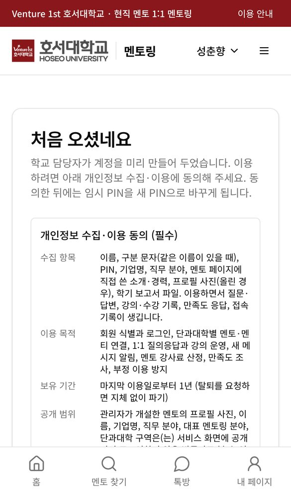
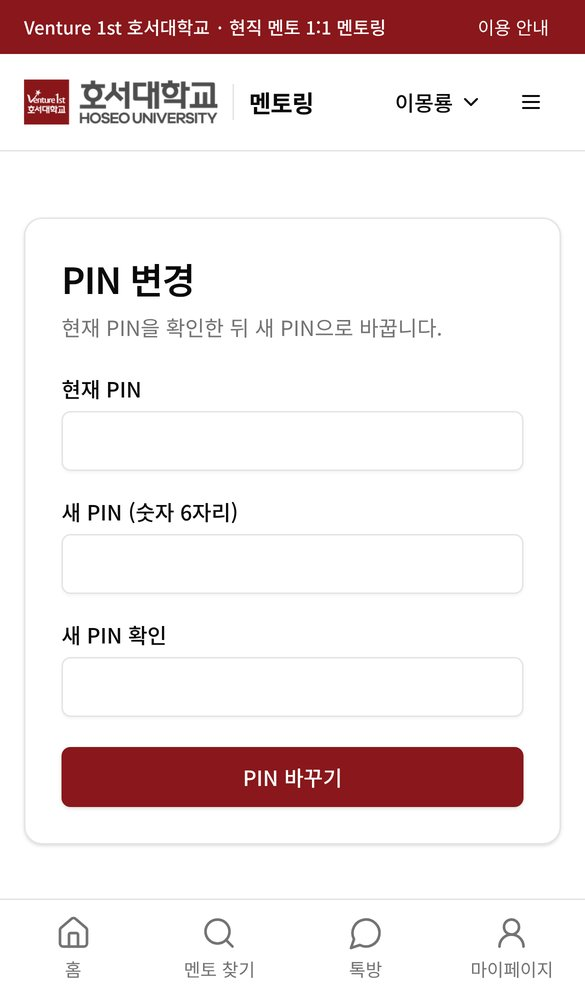
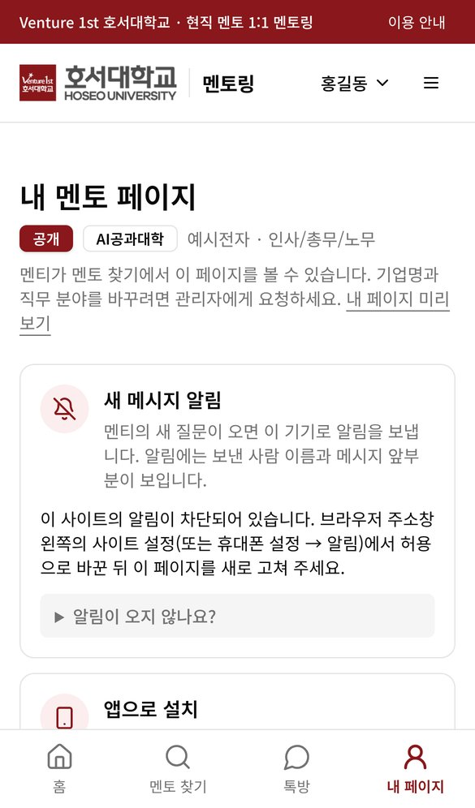
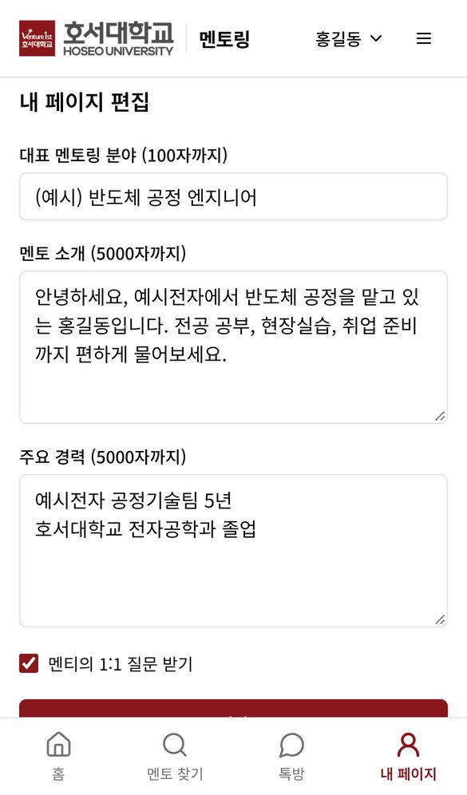
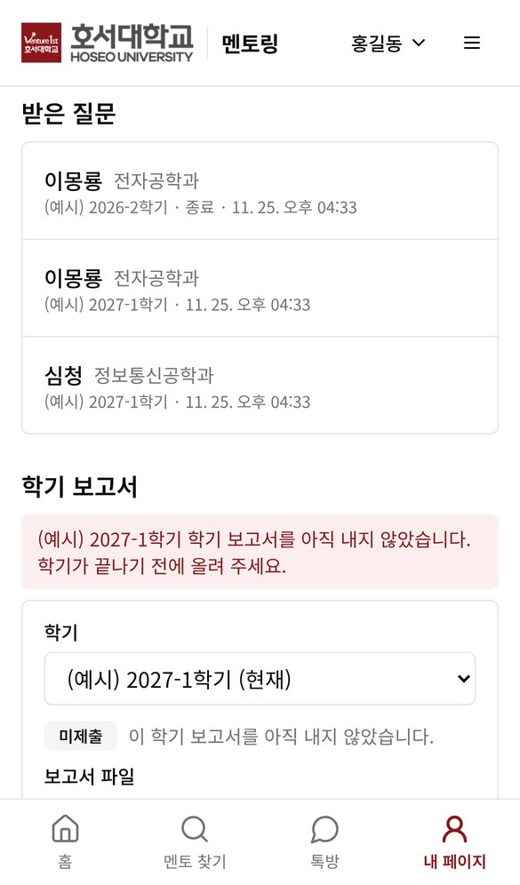
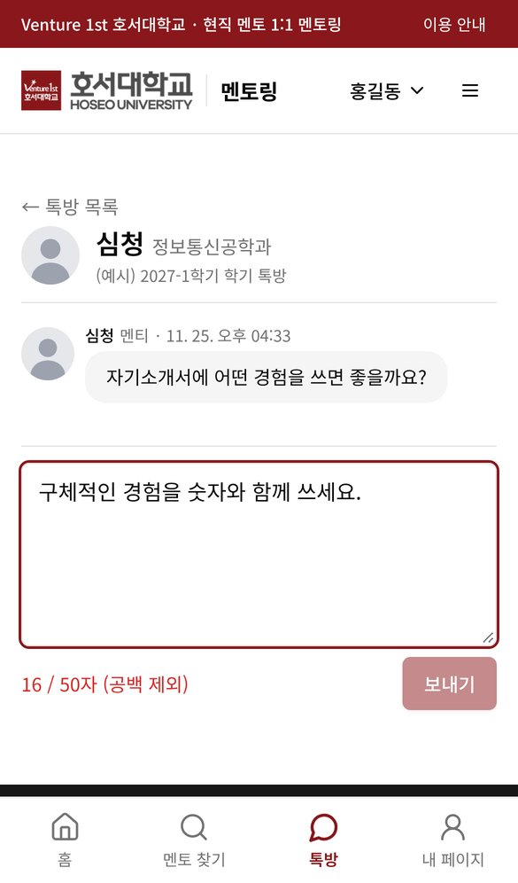
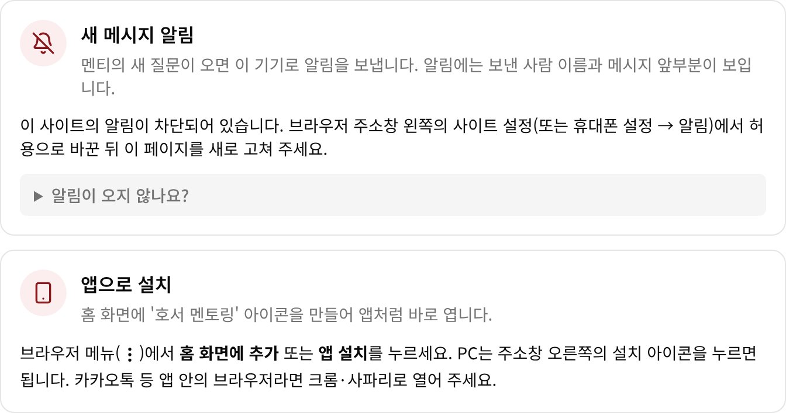
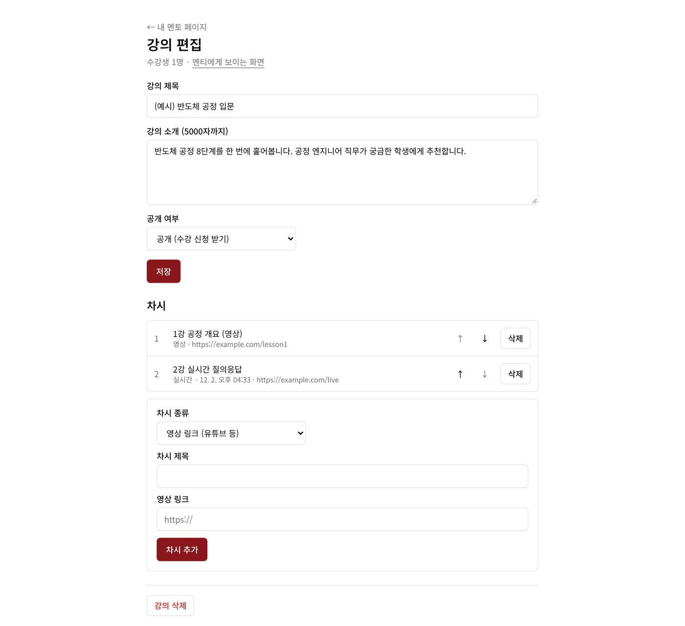
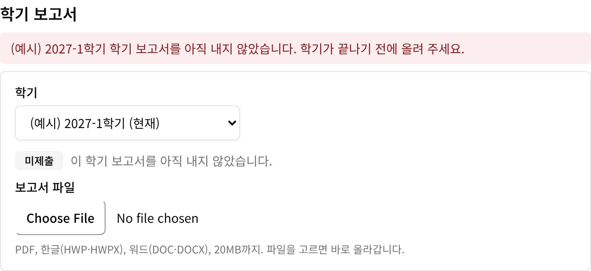

멘토링
멘토링멘토 이용 가이드
후배들의 진로 고민에 함께해 주셔서 감사합니다.
첫 로그인부터 답변·강의·학기 보고서까지 안내서
차례
- 1. 한눈에 보기
- 2. 처음 로그인하기 (동의 → PIN 바꾸기)
- 3. 내 멘토 페이지 꾸미기 (소개 · 경력 · 사진)
- 4. 질문에 답하기
- 5. 새 질문 알림 받기 · 앱으로 설치
- 6. 강의 만들기
- 7. 학기 보고서 내기
- 8. 자주 묻는 질문
멘토 활동 요약
- 단과대학 구역에 배치되어 재학생(멘티)의 1:1 질문에 답합니다. 답변은 공백을 뺀 50자 이상입니다.
- 원하면 짧은 강의(영상 링크·자료·실시간 수업)를 열 수 있습니다.
- 학기가 끝나면 학기 보고서 파일을 올립니다.
- 강사료는 학기 동안의 답변 건수를 바탕으로 학교가 책정해 지급합니다.
1. 한눈에 보기
- 로그인: 소속 "멘토" + 이름 + 숫자 6자리 PIN. 학교가 등록한 경우 안내받은 임시 PIN으로 처음 로그인합니다.
- 처음 한 번: 개인정보 수집·이용 동의 → 새 PIN 정하기
- 내 멘토 페이지: 대표 멘토링 분야, 소개, 경력, 프로필 사진을 채웁니다. 멘티가 질문할 멘토를 고를 때 가장 먼저 보는 내용입니다.
- 알림 켜기: 새 질문이 오면 휴대폰·PC로 알림을 받습니다.
- 답변하기: 톡방에서 답합니다(공백 빼고 50자 이상).
- 학기 말: 학기 보고서 파일(PDF·한글·워드)을 올립니다.
내 정보는 어디까지 공개되나요?
- 누구나(로그인 안 한 방문자): 프로필 사진, 이름(가운데 글자를 O로 가림, 예: 홍O동), 기업명, 직무 분야, 대표 멘토링 분야, 단과대학 구역
- 로그인한 재학생: 위 내용과 실명, 소개, 경력, 강의
- 전화번호·이메일은 사이트에 넣지 않습니다. 공개를 원하지 않으면 운영 담당자에게 요청해 주세요.
2. 처음 로그인하기
 ① 로그인 (소속 "멘토")
① 로그인 (소속 "멘토")

② 개인정보 동의

③ 새 PIN 정하기
- 사이트 오른쪽 위 로그인 → 소속에서 멘토를 고르고, 이름과 안내받은 임시 PIN을 넣습니다. 자동 입력 방지 칸이 "성공"이 된 뒤 로그인합니다.
- "처음 오셨네요" 화면에서 개인정보 수집·이용 내용을 읽고 체크한 뒤 동의하고 시작하기를 누릅니다.
- PIN 변경 화면에서 현재 PIN(임시 PIN), 새 PIN을 두 번 넣고 PIN 바꾸기를 누릅니다. 이후에는 새 PIN으로 로그인합니다.
임시 PIN은 바로 바꿔 주세요임시 PIN은 다른 멘토와 같을 수 있습니다. 생일·전화번호처럼 짐작하기 쉬운 숫자는 피하세요.
직접 가입하는 경우학교가 미리 등록하지 않았다면 회원가입에서 소속 "멘토", 이름, 기업명, 직무 분야, PIN을 넣고 가입합니다. 관리자가 단과대학 구역에 배치하면 공개됩니다.
3. 내 멘토 페이지 꾸미기
오른쪽 위 내 이름 → 내 멘토 페이지(휴대폰은 아래 메뉴)를 누릅니다. 한 화면에 알림, 앱 설치, 프로필 사진, 받은 질문, 학기 보고서, 내 강의, 내 페이지 편집이 모여 있습니다.

내 멘토 페이지 (위)

내 페이지 편집
 재학생에게 보이는 모습
재학생에게 보이는 모습
내 페이지 편집
| 칸 | 쓰는 법 |
|---|
| 대표 멘토링 분야 (100자) | 카드에 한 줄로 보입니다. 예: 반도체 공정 엔지니어 · 취업 준비 |
| 멘토 소개 (5000자) | 하는 일, 도와줄 수 있는 것, 이런 질문 환영 등을 편하게 씁니다. |
| 주요 경력 (5000자) | 회사·직급·기간, 학력 등. 학교가 명단을 등록했다면 근무 정보가 미리 들어가 있으니 확인하고 다듬어 주세요. |
| 멘티의 1:1 질문 받기 | 체크를 끄면 카드의 "질문 가능" 표시가 사라지고 새 질문을 받지 않습니다. 바쁜 기간에 잠시 꺼 둘 수 있습니다. |
다 쓰면 맨 아래 저장을 누릅니다.
프로필 사진
프로필 사진 칸에서 사진 올리기 → JPG·PNG·WEBP 사진을 고르면 편집 화면이 열립니다. 사진을 끌어서 위치를 맞추고 확대·축소한 뒤 이대로 저장을 누르면 바로 멘토 카드에 보입니다. 얼굴이 잘 보이는 사진을 권합니다.
4. 질문에 답하기

받은 질문 (빨간 숫자 = 안 읽음)

톡방에서 답변 쓰기
- 내 멘토 페이지 → 받은 질문 또는 위쪽 톡방 메뉴에서 멘티를 누릅니다. 안 읽은 메시지는 빨간 숫자로 보입니다.
- 아래 칸에 답변을 씁니다. 칸 아래 "16 / 50자 (공백 제외)"처럼 글자 수가 나옵니다.
- 50자가 넘으면 보내기가 켜집니다.
답변은 공백을 뺀 50자 이상짧은 한 줄 답은 보낼 수 없습니다. 이유와 경험을 곁들여 주시면 학생에게 큰 도움이 됩니다. 여러 번 나눠 보내도 되며, 한 질문에 이어 보낸 메시지는 답변 1건으로 셉니다.
좋은 답변 예
"반도체 공정 엔지니어를 준비한다면 전자회로와 반도체공학을 먼저 탄탄히 다지세요. 면접에서 공정 원리를 자주 묻습니다. 방학 현장실습도 큰 도움이 됩니다."
알아 두세요
- 톡방은 학기마다 새로 열리고, 학기가 끝나면 읽기만 됩니다.
- 대화 내용은 강사료 산정과 운영을 위해 관리자가 볼 수 있습니다.
- 개인 연락처 교환이나 회사 기밀은 톡방에 쓰지 말아 주세요. 부적절한 메시지는 관리자가 숨길 수 있습니다.
5. 새 질문 알림 받기 · 앱으로 설치

내 멘토 페이지 맨 위 · 새 메시지 알림, 앱으로 설치
- 새 메시지 알림에서 알림 받기를 누르고 브라우저의 알림 요청에 허용을 누릅니다. 알림을 받을 기기(휴대폰·PC)마다 한 번씩 켭니다.
- "알림이 차단되어 있습니다"가 보이면 주소창 왼쪽 사이트 설정(또는 휴대폰 설정 → 알림)에서 허용으로 바꾸고 새로 고칩니다.
| 앱으로 설치 | 방법 |
|---|
| 안드로이드 (크롬) | 크롬 메뉴(⋮) → 홈 화면에 추가 / 앱 설치 |
| 아이폰 (사파리) | 공유 버튼 → 홈 화면에 추가. 아이폰은 이 아이콘으로 열어야 알림을 켤 수 있습니다. |
| PC (크롬·엣지) | 주소창 오른쪽 설치 아이콘 |
카카오톡으로 링크를 받았다면카카오톡 안의 브라우저에서는 설치·알림이 되지 않습니다. 메뉴에서 다른 브라우저로 열기(크롬·사파리)를 누르세요.
6. 강의 만들기 (선택)
짧은 직무 소개 영상, 자료, 실시간 질의응답 등을 강의로 열 수 있습니다. PC에서 하기를 권합니다.

강의 편집 화면
- 내 멘토 페이지 → 내 강의에 강의 제목을 넣고 강의 만들기를 누르면 강의 편집 화면이 열립니다.
- 강의 소개를 쓰고 저장합니다.
- 차시를 추가합니다. 차시 종류를 고르고 제목과 내용을 넣은 뒤 차시 추가.
- 영상 링크 (유튜브 등): 유튜브 등 영상 주소. 영상 파일은 올릴 수 없으니 링크로 넣어 주세요.
- 자료 파일: PDF, 한글(HWP·HWPX), 워드, 엑셀, 파워포인트, 이미지(PNG·JPG), ZIP, TXT · 20MB까지
- 실시간 수업 링크: 줌 등 회의 주소와 수업 시각
- 차시 순서는 ↑↓로 바꾸고, 다 되면 공개 여부를 공개 (수강 신청 받기)로 바꿔 저장합니다.
수강 신청한 재학생만 강의 자료를 볼 수 있습니다. 수강생 수는 강의 편집 화면 위에 나옵니다. 멘티에게 보이는 화면을 누르면 학생 입장에서 확인할 수 있습니다.
7. 학기 보고서 내기

내 멘토 페이지 · 학기 보고서
- 내 멘토 페이지 → 학기 보고서로 갑니다.
- 학기를 고릅니다(처음에는 현재 학기).
- 파일 선택을 눌러 보고서를 고르면 바로 올라가고 "제출함"으로 바뀝니다.
- 받는 형식: PDF, 한글(HWP·HWPX), 워드(DOC·DOCX), 20MB까지
- 학기마다 1건입니다. 다시 고르면 새 파일로 바뀝니다. 지우기로 지울 수도 있습니다.
- 학기 중이든 끝난 뒤든 언제든 낼 수 있습니다. 아직 내지 않았으면 "학기가 끝나기 전에 올려 주세요" 안내가 보입니다.
- 보고서는 나와 관리자만 볼 수 있습니다.
8. 자주 묻는 질문
- PIN을 잊어버렸어요.
- 운영 담당자에게 연락하면 임시 PIN을 알려 드립니다. 임시 PIN으로 로그인하면 새 PIN을 정하는 화면이 나옵니다.
- 로그인이 안 돼요.
- 소속을 "멘토"로 골랐는지, 이름에 구분 문자(예: 홍길동A)가 필요한지, PIN이 맞는지 확인해 주세요. 자동 입력 방지 칸이 "성공"이 된 뒤 버튼을 눌러야 합니다.
- 답변이 보내지지 않아요.
- 공백을 뺀 50자 이상이어야 보낼 수 있습니다. 칸 아래 글자 수를 확인해 주세요.
- 당분간 질문을 받기 어려워요.
- 내 페이지 편집에서 멘티의 1:1 질문 받기 체크를 끄고 저장하세요. 다시 켜면 질문을 받습니다.
- 기업명·직무 분야가 잘못 나와요.
- 운영 담당자에게 알려 주시면 고쳐 드립니다. 소개·경력·대표 분야는 내 페이지 편집에서 직접 고칠 수 있습니다.
- 사이트에 공개되고 싶지 않아요.
- 운영 담당자에게 요청하면 비공개로 돌립니다. 로그인하지 않은 방문자에게는 이름 가운데 글자가 가려져 보입니다.
- 강사료는 어떻게 정해지나요?
- 학기 동안 질문에 답한 건수를 바탕으로 학교가 책정합니다. 한 질문에 여러 번 나눠 보낸 답은 1건으로 셉니다. 금액은 사이트에 표시되지 않으며 학교가 따로 안내합니다.
- 화면에 오류가 나요.
- 화면 맨 아래 문제 알리기로 어떤 화면에서 무엇을 했는지 적어 보내 주세요.
문의운영: 호서대학교 취업팀 · 사이트의 이용 안내 화면 아래 문의처를 참고해 주세요.